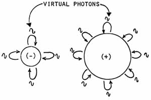
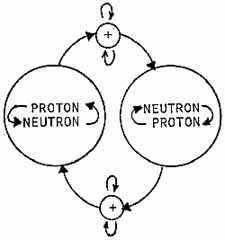

 |
 |
|
|
ELECTRON
PROTON
|
IN A NUCLEUS, EVEN A NEUTRON IS CONTINUALLY CHANGING INTO A PROTON, AND VICE VERSA, BY THE EXCHANGE OF THE POSITIVE CHARGE. |
Fig. 10. All mass is charged: everything is electrical
ALL MASS IS CHARGED:
EVERYTHING IS ELECTRICAL
| It is well known that all mass is
charge; thus everything in one sense is electricity. To
examine this concept, let us look again at the electron with its virtual
photons being emitted and absorbed, which virtual activity creates the
electric field of the electron. In classical theory the electron
is visualized as if it were a little hard spinning
sphere; the spinning of its electric field then generates a magnetic
component. This concept of spin is retained, even though the
electron is no longer regarded simply as a little baseball. From our viewpoint, the electric field constitutes a steady activity of the emission and absorption of virtual photons, and the electron spin is more of an implosion or explosion in higher dimensional space. That is, we visualize a fundamental stable particle as a precise closure of the entire physical universe, like the Einstein spherical model of the cosmos. Furthermore, we visualize multiple closure; first, a very gradual macroscopic closure gives the so-called gravitational closure of the Einstein spherical model, and a closure - in the case of an electron - of about 1042 times as quick and small gives the charge closure. This second closure is considered to be at right angles to the first. In one direction the second closure gives a negative charge, and in the opposite direction the second closure gives a positive charge. So in this view, spin is occurring in at least ,four spatial dimensions, not just three. It is more of an implosion or explosion into and out of this three-space universe frame. From such a model, we could expect that some startling physical phenomena might be possible. For example, we might visualize the implosive or ex- plosive spin as similar to a vector flux. If these vectors are not precisely antiparallel when two like charged particles meet, then a resultant flux vector exists. Since spin is actually the quantity action (energy x time, or momentum x length, or mass x time), then the existence of a vector resultant means that enough action can exist to provide a quantum to be fissioned, which yields (creates) physical change. Thus such a resultant allows a collision or interaction to occur. On the other hand, if two like charged particles meet and their spins are precisely antiparallel, then no vector resultant flux exists. Hence no effective action exists to be fissioned and create physical change (collision or interaction). Thus two like charged particles with precisely antiparallel spin ought to run right through each other when they meet, with no interaction at all, electrical or otherwise, in complete contradiction to conventional collision theory and conventional electrical theory which states that like charges repel one another. Such an experiment has been done, at Argonne National Laboratory, with colliding protons. When the colliding protons have antiparallel spins, they do indeed pass right through one another. And there dies forever the old idea of concrete, solid, material reality. The experiment is not predictable or permitted by present electromagnetic theory or conceptual models of the proton and proton interaction. The experiment is consistent with our dual closure holographic model of the universe, however, and is in fact predicted by it. In a nucleus, we find both protons and neutrons (except for a single isotope of hydrogen, which contains only a single proton in its nucleus ). However, these nucleons do not exactly maintain their exclusivity. Instead, a proton is continually changing into a neutron and vice versa; this metamorphosis is accomplished (in theory) by the continual exchange of a small particle of mass containing the positive charge. Thus a highly dynamic type of electrical current activity is going on in the nucleus. And in fact, this is the only way a neutron can be stabilized in ordinary matter; when freed from the nucleus, the neutron is unstable and decays in about eleven seconds or so. So even a neutron is continually changing into a positive particle, i e., into electricity, when it is in the nucleus of an atom. And around the nucleus, the electrons are in dynamic orbit, so highly dynamic electrical activity is going on in the outer part of an atom and also in the inner part. Thus indeed all mass is charged and everything macroscopic is electrical. And every physical change of a charged particle constitutes a modulation imposed upon its virtual photonic activity creating its electromagnetic field. These modulations are simply coherently collected to breach the threshold of the virtual (third) orthoframe, passing into the second orthoframe, then breaching the threshold of that frame, and passing into the first orthoframe, which is the frame of the electromagnetic field. The electric field is coupled by the dual closure mechanism to the gravitational field, and also to the mass. The entire mechanism constitutes the coupling of the virtual state reality to observable state reality, and the electromagnetic field plays a prominent part in this coupling. Psychotronics is nothing but the extrapolation of this mechanism and the formulation of a theory to allow the construction of practical devices based upon it. Put simply, psychotronics is virtual state engineering. |